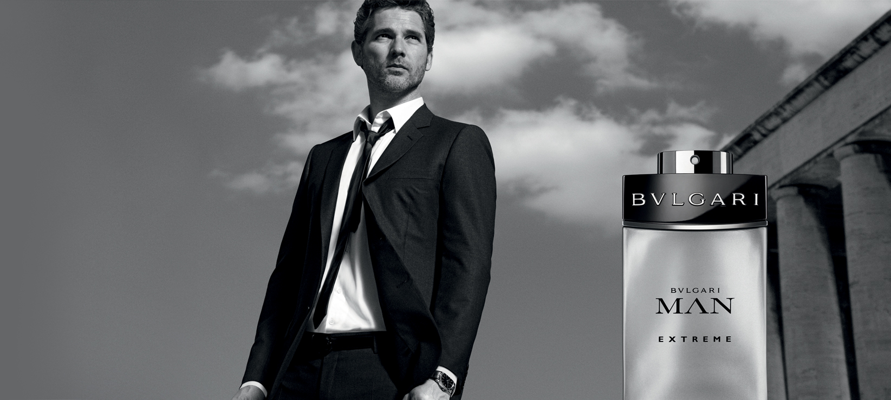
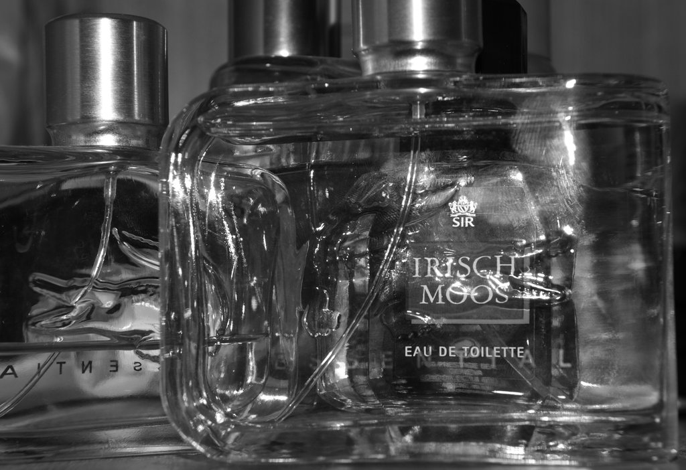

Hainele atrag priviri dar un parfum bun poate întoarce capetele pe stradă. Cu toții știm puterea unui parfum bun, însă puțini sunt informați atunci când merg să-și cumpere unul. Prețul parfumului nu sugerează neapărat cât de bine va mirosi pe tine. Un parfum scump poate trece neobservat, în timp ce unul ieftin poate atrage atenția unei încăperi întregi.
 Cât parfum să folosesc?Când vine vorba de cu cât de mult parfum să dai pe tine, majoritatea bărbaților fac greșeala de a pune prea mult. Ideea de bază este ca parfumul să nu fie simțit decât la maxim 1-2 metri de tine, nu de cineva din celălalt colț al încăperii.
Cum mă parfumez?Parfumul se aplică în punctele în care îți simți pulsul: după ureche, la baza gâtului și la încheietura mâinilor. Nu freca zonele parfumate pentru că vei altera mirosul.
Parfumuri naturale versus parfumuri artificialeÎn compoziția unui parfum intră extrem de multe substanțe, unele dintre ele putând cauza alergii. Asta deoarece peste 90% din aceste substanțe sunt derivate ale unor substanțe petrochimice. Drept urmare, folosirea unor parfumuri poate cauza anumitor persoane mai sensibile simptome precum: dureri de cap, greață, alergii la nivelul pielii, iritații ale ochilor, gâtului sau nasului.
În principiu, parfumurile naturale (cu alte cuvinte, cele ce conțin uleiuri esențiale naturale, produse pe baza florilor efective și a extraselor de plante) nu sunt cele pe care le găsești pe rafturile magazinelor. Odată cu terminarea celui de-al doilea război mondial a început producerea și comercializarea în masă a parfumurilor sintetice, fapt care continuă și astăzi. Deoarece parfumurile naturale sunt greu de găsit, dacă crezi că vei avea sau ai avut probleme, este recomandat sa alegi o concentrație mai mică de parfum si sa te ferești de compuși care sunt recunoscuți pentru faptul că pot cauza iritații: linalol, camfor, acetat de benzil, acetat de etil, alcool benzilic.
Schimbă parfumulFiind vorba de stil, îți recomand să schimbi parfumul din când în când, pentru varietate. Și ar mai fi un motiv: dacă folosești același parfum o perioadă îndelungată, vei ajunge să nu mai simți mirosul. Nu îți vei da seama de asta și vei ajunge să te dai cu din ce în ce mai mult, lucru ce va fi cu siguranță observat de cei din jur.